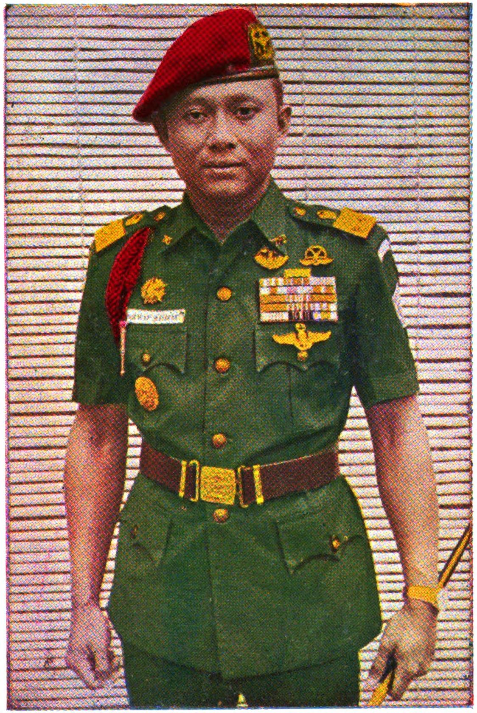

Sarwo Edhie Wibowo
| Lahir | : | 25 Juli 1925 |
| Meninggal | : | 9 November 1989 (umur 64) |
| Profesi | : | Tentara |
Sarwo Edhie Wibowo (1925-1989) adalah seorang perwira militer Indonesia yang memainkan peran penting dalam sejarah Indonesia pasca-kemerdekaan. Ia adalah salah satu tokoh kunci dalam perang gerilya melawan Belanda selama Agresi Militer Belanda I (1947-1948) dan Agresi Militer Belanda II (1948-1949). Pada era pemerintahan Presiden Soekarno, Sarwo Edhie Wibowo menjabat sebagai Panglima Angkatan Darat dan kemudian sebagai Menteri Pertahanan. Setelah terjadinya peristiwa G30S/PKI (Gerakan 30 September/Partai Komunis Indonesia) pada tahun 1965, ia memimpin pasukan militer yang menghadapi PKI dalam peristiwa anti-komunis yang berdarah dan menggulingkan pemerintahan Soekarno. Pada era Orde Baru di bawah Soeharto, ia terus memegang peran penting dalam kepemimpinan militer dan dikenal sebagai salah satu tokoh yang mendukung stabilitas politik dan otoritas militer.
Kehidupan Saat Masa Orde Baru
Sarwo Edhie Wibowo memegang beberapa peran penting selama masa Orde Baru di bawah pemerintahan Presiden Soeharto. Pertama, sebagai seorang tokoh militer berpengaruh, ia memegang jabatan-jabatan tinggi dalam hierarki militer, termasuk Panglima Angkatan Darat, yang membuatnya memiliki pengaruh besar dalam struktur keamanan negara. Selama masa Orde Baru, militer memegang peran sentral dalam menjaga kestabilan politik dan mengamankan pemerintahan, dan Sarwo Edhie Wibowo adalah salah satu pemain kunci dalam hal ini.
Kedua, ia juga memainkan peran dalam menghadapi peristiwa-peristiwa yang terjadi selama masa Orde Baru. Salah satu peran kritisnya adalah dalam menangani peristiwa G30S/PKI pada tahun 1965. Setelah peristiwa tersebut, ia memimpin operasi militer yang berkontribusi pada penggulingan PKI dan menyebabkan peristiwa yang dikenal sebagai "Pembersihan G30S/PKI," yang sangat kontroversial dan berdarah. Sarwo Edhie Wibowo dan pasukan militer yang ia pimpin memiliki peran besar dalam mengubah dinamika politik Indonesia dengan menghilangkan pengaruh PKI secara drastis.
Ketiga, Sarwo Edhie Wibowo juga memainkan peran dalam mendukung kepemimpinan Soeharto dan menjaga stabilitas politik selama masa Orde Baru. Ia terlibat dalam berbagai upaya untuk menjaga keamanan dan ketertiban nasional serta mendukung kebijakan-kebijakan pemerintah yang bertujuan untuk mengamankan pemerintahan Soeharto. Meskipun perannya dalam menjaga stabilitas politik dihargai oleh pemerintah, ia juga dikenal karena kebijakan kerasnya dalam menekan kelompok-kelompok yang dianggap sebagai ancaman terhadap pemerintahan Orde Baru, yang sering kali melibatkan pelanggaran hak asasi manusia. Sarwo Edhie Wibowo adalah salah satu tokoh kunci yang mencirikan era otoriter Orde Baru di Indonesia.